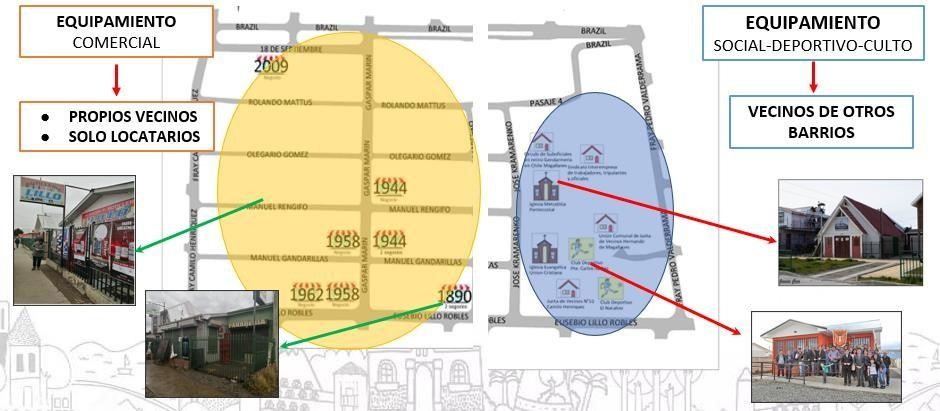

Proyectos
Realizar diferentes proyectos urbanisticos, parques, cachas deportivas, aceras, ciclovias,glifos,cesto de basura,remodelacion de calles
Proyectos ejecutandose con el aporte del gobierno nacional, regional y loca
Cultura y Educacion
Activacion de plan vacacional y regreso a clase
Equipo CERT.
Programa especializado en apoyo en caso de algun desastre, siniestro, accidente primero equipo de apoyo en la comunidad.
Noticias
Segmento dedicado a informar y divulgar las actividades, proyectos que se ejecutan en la comunidad:
- Educacion
- Cultura
- Deporte
Numero de Emergencia:
- Carabineros
- Bombero
- PDI
¿Cómo es el barrio?
La población Camilo Henríquez de la comuna de Punta Arenas, se ubica en el sector sur poniente, construida por el Servicio de Vivienda y Urbanismo de la región de Magallanes y Antártica Chilena en el año 1983 constituida por 180 viviendas sociales de 32,5mt2. Este polígono para efectos de postulación del programa Quiero Mi Barrio 2020, incluye el loteo Ahern año 1990, el cual consta de 50 viviendas las que fueron edificadas por autoconstrucción de sus propietarios. Con lo anterior se alcanza a un total de 259 viviendas a intervenir.
- POLIGONO INTERVENIDO
- NORTE
- FRAY PEDRO VALDERRAMA
- SUR
- FRAY CAMILO HENRÍQUEZ
- ORIENTE
- EUSEBIO LILLO
- PONIENTE
- AVDA. BRAZIL
| CARACTERIZACIÓN BARRIAL | SECTOR LOTEO AHERN | SECTOR CAMILO HENRIQUEZ |
|---|---|---|
| TIPOLOGIA DE VIVIENDAS | AUTOCONTRUCCIÓN | VIVIENDAS SOCIALES |
| NRO DE VIVIENDAS | 48 | 211 |
| NRO DE MANZANAS | 1 | 10 |
| MTS CUADRADOS | 0 | 35 mts Cuadrados |
| AÑO DE CONSTRUCCIÓN | 1980 | 1983 |
| NRO DE SEDES SOCIALES | 8 | 0 |
| GRIFOS | 0 | 2 |
| POBLACIÓN COLINDANTE | MONSEÑOR BORIC - JUAN PABLO II | DIEGO PORTALES - JUAN PABLO II |
Respecto a los antecedentes históricos del barrio, responden a las viviendas que fueron entregadas a los pobladores hace aproximadamente 36 años atrás, cuyo objetivo fue responder y dar solución a la necesidad de contar con sus viviendas propias, como sueño de toda familia. En cuanto al polígono de intervención, está determinado por la necesidad de incluir lugares que se encuentran con deterioro urbano y son puntos estratégicos que los vecinos entrevistados ven y sienten como propios y con sentido de pertenencia, y que se hace prioritaria lograr mejorar su condición actual. Es por ello que el polígono por el poniente incluye parte de Avda. Brazil desde Fray Camilo Henríquez a Fray Pedro Valderrama divide el Loteo Ahrens con la Población Boric. En el límite oriente, se establece la calle Eusebio Lillo, una vía de acceso a la población y que presenta cierto nivel de deterioro de las veredas que se encuentran en malas condiciones para el tránsito peatonal. El polígono es representativo de la población y reconocido por los vecinos, aun cuando tiene como barrios colindantes, las Poblaciones Juan Pablo II, Diego Portales, Monseñor Boric y Loteo Linch.
EQUIPAMIENTO
El barrio Camilo Henríquez tiene equipamientos de culto, social y comercial, además de una plaza-parque. No obstante, para satisfacer necesidades de salud, culturales, financieras y educacionales tanto primarias, secundarias y superior, los habitantes deben salir del barrio. Lo más cercano en primera instancia es el Barrio 18 de septiembre, como también para acceder a la Biblioteca o al centro de la ciudad (bibliotecas, centro cultural, teatro, cine, municipio, otros)
Equipamiento Social
| NOMBRE ORGANIZACIÓN | DIRECCIÓN | TIPO DE ORGANIZACIÓN |
|---|---|---|
| Sede social comunitaria Junta de Vecinos Nro. 51 Camilo Henríquez | Eusebio Lillo Nº 1854 | TERRITORIAL |
| Sede Social Club Deportivo El Natalino. | Eusebio Lillo Nº 1856 | FUNCIONAL |
| Iglesia evangélica Unión Cristiana | José Kramarenko Nº 0738 | FUNCIONAL |
| Sindicato Interempresa de Trabajadores, Tripulantes y Oficiales de Naves Especiales, Nacionales y Extranjeras, y Ramas Similares | Fray José Valderrama Nº 0803 | FUNCIONAL |
| Iglesia Metodista Pentecostal | José Kramarenko Nº 0810 | FUNCIONAL |
| Círculo de Suboficiales en retiro de Gendarmería de Chile “Magallanes” | José Kramarenko Nº 0870 | FUNCIONAL |
| Unión Comunal de J.V Hernando de Magallanes | Pasaje 2 del Loteo Aherns/ SIN SEDE | FUNCIONAL |
Ubicacion geograficas
En el Barrio Camilo Henríquez se focaliza la mayoría de los locales de comercio. Tanto formales como informales, los que funcionan muchas veces como NODOS DE COMUNICACIÓN, predomina el aumento de nuevos mercados y actividades económicas. Encontramos locales de venta de abarrotes, insumos de primera necesidad, comidas preparadas, venta de ropa y textiles en general, Talleres mecánicos y lavado de vehículos.
Características sociodemográficas
El barrio Camilo Henríquez presenta una población que predomina en que el 13% son menores de edad, 18% jóvenes, 61% adultos y 7% adultos mayores. La variable predominante en edad corresponde entre los (30 - 69) años.

Rando de Edades
Sin embargo, la encuesta de caracterización barrial arroja que en su mayoría al interior del barrio Camilo Henríquez predomina el sexo femenino con un 52,1%, en cuanto al seco masculino este alcanza a un 47,9 % Masculino. La población de residente migrante alcanza a un 3% del total de residentes del barrio, correspondiendo en su mayoría a nacionalidad venezolana, en consideración que un 96.3% acredita tener nacionalidad chilena.


Mascotas y Servicios de Higiene
Cuidando la salud de tu mascota Mozilla Developer Network.
- Perro, Razas
<cuidado>. - Gatos, Clases
<modo>. - Avespuro cosas
<pluma>, with an optionaltitleattribute for the full phrase. - Caballo— otros, montura
<herradura>. Patosmedio<medio>y variedad promedio<ins>.- Insectosavispa control
<con>variedad texto uses<sub>.
Ubicacion geograficas
Sectores
Vida y comunidad
Venta graje
Yo emprendo
Conociendo a mi barrioQuiero vender